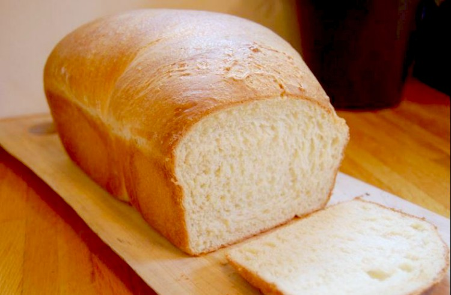

1 taza de agua tibia/caliente, y más de ser necesario
2 cucharadas de manteca derretida y tibia
1 sobre de levadura rápida (7 gramos)

Preparación:
En un jarro colocar el agua tibia, agregar el azúcar y revolver. Agregar la levadura y dejar reposar 5-8 minutos, debe formar espuma y burbujear, esto activa la levadura y les confirma que esta viva.
En un bol colocar la harina y la sal, revolver, hacer un volcán y poner en el centro la manteca derretida, y la mezcla de agua, azúcar y levadura.
Amasar todo hasta obtener una masa tierna que suene, toma unos 10 minutos, agregar mas agua de ser necesario, se puede usar una máquina de hacer pan o una Kitchenaid con la paleta de amasado (yo le dí 5 minutos de amasado en la KitchenAid con el gancho y en velocidad 2).
Hacer un tronco con la masa y cortarla en 12 trozos iguales (70 gramos), cubrirlos con un paño de cocina e ir trabajando cada bolita dandole forma de pan.
Dejar subir, leudar por 1 hora en un lugar tibio cubiertos con el paño de cocina.
Precalentar el horno a 350F o 180C.
Pincelar con leche o huevo batido. Pinchar los panes con un tenedor y llevar al horno. Hornear por 25-30 minutos o hasta que estén ligeramente dorados.
Servir calientes, si sobran recalentarlos envueltos en un paño húmedo en el microonda. O abrir y tostar.